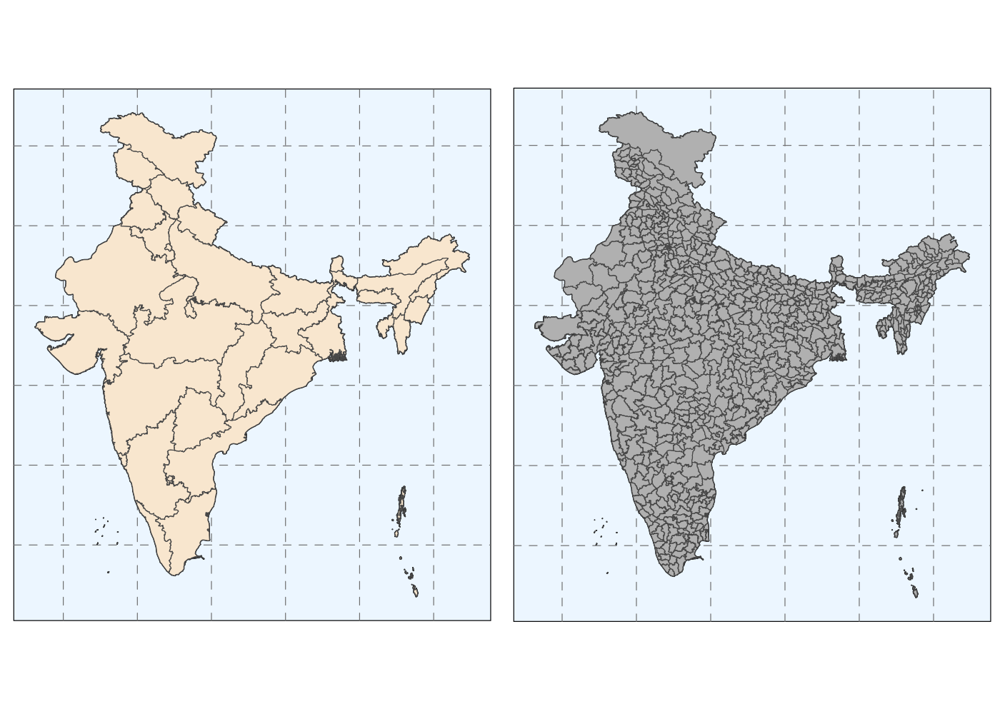
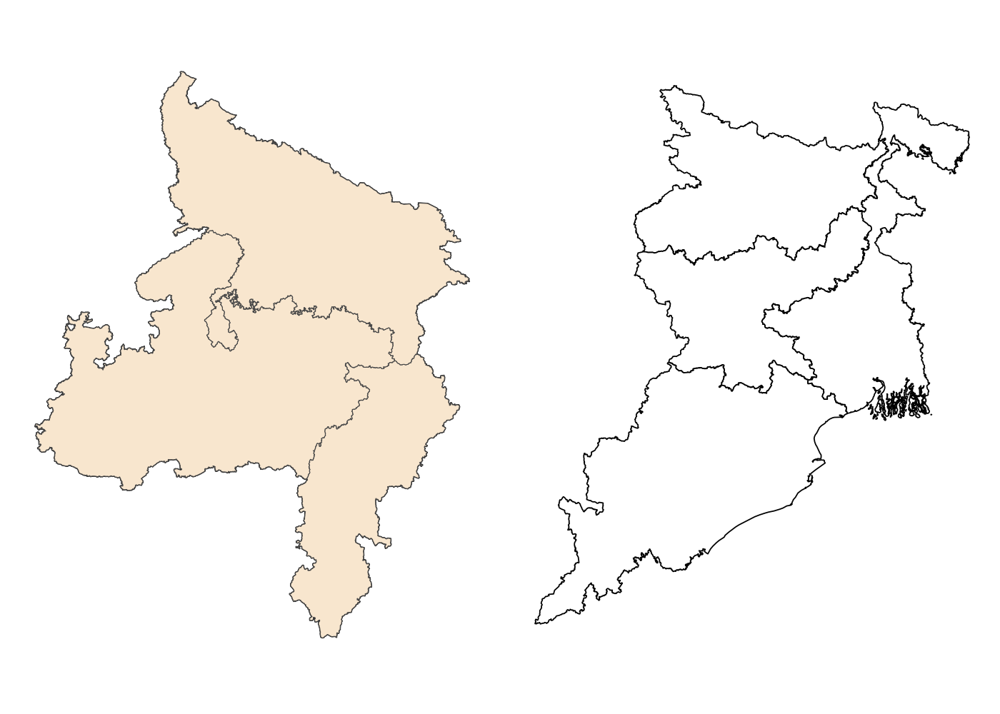
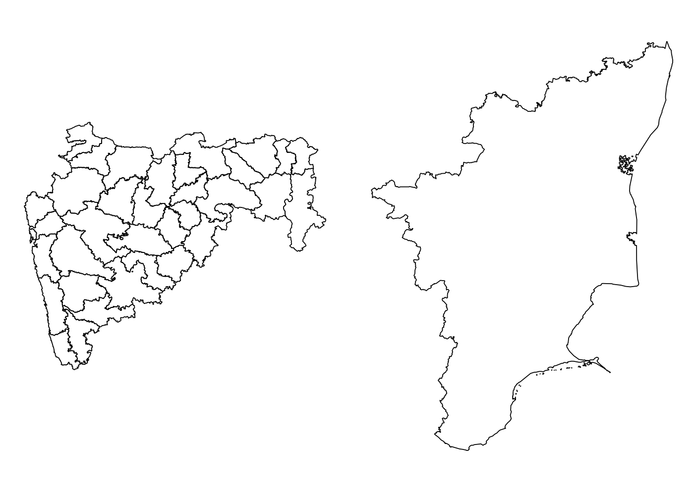
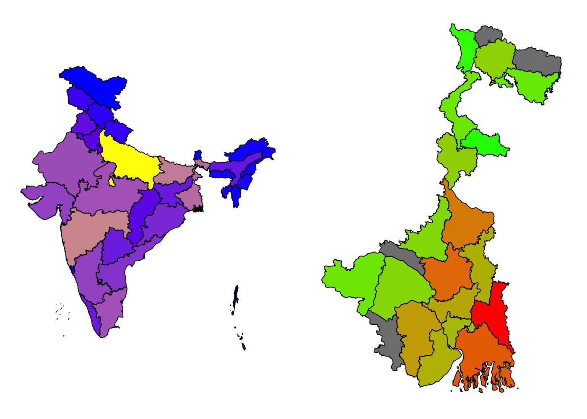

The goal of mapindia is to simplify mapping of the Indian subcontinent. It has convenient functions for plotting choropleths, visualizing spatial data, and handling state/district codes.
Note: The 3-digit district codes were merged with the 2-digit state codes to create a 5-digit district code.
Installation
You can install the development version of mapindia from GitHub with:
# install.packages("pak")
pak::pak("shubhamdutta26/mapindia")Example
Plot a basic map of the Indian subcontinent with states and districts:
library(mapindia)
library(ggplot2)
states <- plot_map("states") +
geom_sf(fill= "antiquewhite") +
theme(panel.grid.major =
element_line(color = gray(.5), linetype = "dashed", linewidth = 0.2),
panel.background = element_rect(fill = "aliceblue"))
districts <- plot_map("districts") +
geom_sf(fill= "gray") +
theme(panel.grid.major =
element_line(color = gray(.5), linetype = "dashed", linewidth = 0.2),
panel.background = element_rect(fill = "aliceblue"))
cowplot::plot_grid(states, districts, nrow = 1)
Visualize zones such as the Central or Eastern Zonal Councils:
central <- plot_map("states", include = .central, exclude = "UK", labels = TRUE) +
geom_sf(fill= "antiquewhite")
east <- plot_map("states", include = .east, labels = FALSE)
cowplot::plot_grid(central, east, nrow = 1)
Visualize individual states such as the West Bengal or Tamil Nadu:
mh <- plot_map("districts", include = "MH")
tn <- plot_map("state", include = "Tamil Nadu", labels = FALSE)
cowplot::plot_grid(mh, tn, nrow = 1)
Use your data for visualizations as well:
statepop2011 <- plot_map("states", data = statepop, values = "pop_2011") +
scale_fill_continuous(low = "blue", high = "yellow", guide = "none")
wbpop2011 <- plot_map("districts", data = wb_2011, values = "pop_2011", include = "WB") +
scale_fill_continuous(low = "green", high = "red", guide = "none")
cowplot::plot_grid(statepop2011, wbpop2011, nrow = 1)